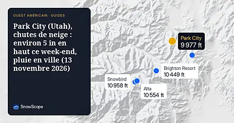
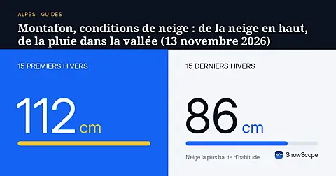
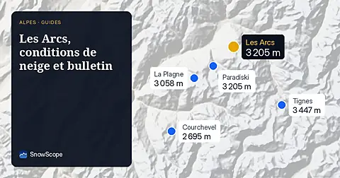
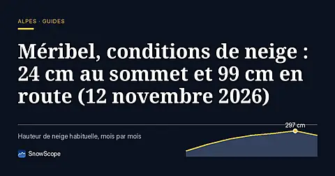

Bulletins neige · Ski
Des bulletins neige quotidiens pour les skieurs : où est la neige, ce qui arrive et où skier, d'après la carte de neige SnowScope et les stations de mesure. Chaque chiffre vient des données du jour.

Prévision de neige à Park City (Utah) le 13 novembre 2026 : presque pas de neige au sol pour l'instant, environ 5 in près du sommet avec la tempête du week-end et une limite pluie-neige de 7,400 à 7,700 ft, pluie en bas, et environ 12 in en haut sur la semaine.

Conditions de neige à Silvretta Montafon le 13 novembre 2026 : 4,5 cm au sommet à 2421 m, mi-pente et vallée à nu, environ 40 cm attendus en altitude cette semaine, pluie dans la vallée sous 1 500 m.

Chutes de neige à Val Thorens, 13 novembre 2026 : 27 cm tombés au sommet (3175 m) et 17 cm à 2498 m en sept jours ; hauteur de neige de 50 cm et 8 cm. Sept prochains jours : 86 cm au sommet, 73 cm à 2498 m, limite pluie-neige bien sous le village. La saison habituelle sur 46 hivers.

La hauteur de neige à Chamonix le 13 novembre 2026, altitude par altitude : rien au fond de la vallée, 1 cm à 2001 m, 12 cm en haut de Brévent-Flégère (2486 m), 5 à 24 cm en haut des Grands Montets (2768 m). Environ un mètre prévu en altitude cette semaine, de la pluie dans la vallée. L'épaisseur habituelle sur 46 hivers.

Bulletin neige des Menuires du 13 novembre 2026 : 28 cm au sommet (2838 m), rien au sol à 2112 m ni à 1386 m. Environ 80 cm attendus au sommet en sept jours, limite pluie-neige vers 1500 à 1700 m. Pourquoi Val Thorens, 450 m plus haut dans la même vallée, en a déjà plus.

Les conditions de neige à Tignes le 13 novembre 2026 : 42 cm au sommet (3447 m), 12 cm à 2503 m, une vallée sans neige à 1559 m, et 99 cm prévus au sommet sur sept jours, avec de la pluie sous 1700 m environ. La comparaison avec 46 hivers passés.

La Rosière au sommet retient 24 cm le 11 novembre ; les sept prochains jours annoncent 108 cm à 2 799 m, 61 cm à mi-montagne.

Prévisions aux Arcs pour le 12 novembre : 69 cm attendus au sommet, 46 cm à mi-montagne au cours des sept prochains jours. La neige s'accumule.

Méribel affiche 24 cm au sommet et fait face à 99 cm de neige nouvelle en sept jours. Données du 11 novembre 2026.

Épaisseurs de neige à Isola 2000 le 11 novembre 2026 : 9 cm au sommet, 7 cm à mi-montagne, 2 cm en bas de station. Un manteau hivernal précoce sur cette station alpine.

Pas encore de neige à Oukaïmeden le 12 novembre. Les pics de l'Atlas sont dénudés ; la saison hivernale atteint généralement son apogée en mars avec 58 cm au sommet.

Une carte des pentes des Grands Montets et de sept autres domaines skiables montre quelle part du terrain dépasse 30°, 35° et 40°, et pourquoi ce seuil compte pour les avalanches.

Un séjour de 3 jours pas cher au lac de Côme en décembre, avec les vrais prix 2026-27 : trains, bateaux, funiculaire et ski à Piani di Bobbio ou Madesimo, l'économie par rapport à Cortina et les chances de neige à Noël.

La neige du jour à Livigno, ce que la prévision saisonnière européenne annonce pour décembre, et pourquoi l'altitude l'emporte sur un mois doux à Noël.

La neige du jour à Cortina, la prévision saisonnière européenne pour décembre et nos chances d'un Noël blanc dans l'est des Dolomites.

Prévisions pour les Dolomites en décembre 2026 : plus chaud de 1,7 °C, légèrement plus humide, 30 cm de neige en fin d'année, Noël blanc à mi-montagne. Données du 10 novembre.

Combien d'eau la neige de l'Atlas pourrait garder en février 2027 : la prévision saisonnière européenne est environ 3 °C plus douce et plus humide à l'ouest et au sud, et les chances de neige restent faibles sur les bassins du Maroc.

Prévision janvier 2027 pour l'Atlas marocain : 69 millions m³ d'eau de neige attendus, bien en dessous de la normale de 206. Données du 10 novembre 2026.

Bou Iblane reste nu jusqu'en décembre. Prévisions saisonnières : 2,3 °C plus chaud que la normale, seulement 22 cm de neige nouvelle attendus, 0 cm au sol le 31 décembre. Données : 10 novembre 2026.
Perspectives saisonnières pour les Rocheuses : décembre plus chaud en avant, neige proche de la normale, mais le nord penche vers des conditions plus sèches tandis que le Colorado et l'Utah restent indécis. Données du 10 novembre 2026.
En décembre, les Alpes du Sud seront plus chaudes et plus humides que d'habitude, mais l'épaisseur de neige en fin d'année devrait rester proche de la normale. Analyse SnowScope du 11 novembre 2026.

Oukaimeden fait face à un décembre chaud avec 13 cm prévus le 31 décembre, bien en dessous de la normale de 26 cm. Données du 10 novembre 2026.

Chamonix commence décembre avec 27 cm au sommet mais une neige fine en contrebas. La chaleur et l'humidité s'opposent ; attendez-vous à une neige de décembre proche de la normale. Données du 10 novembre 2026.
Une image, 100 massifs dans les Alpes, les Pyrénées, l'Atlas et en Amérique du Nord : le Canada mène avec 89 % d'enneigement, les Alpes atteignent 45 %, l'Atlas et le nord-est des États-Unis sont encore secs.

SnowScope vérifie sa carte de neige quotidienne par rapport à 2 012 stations de montagne. Le 9 novembre 2026, la carte avait une erreur typique de 7,7 cm et était correcte 88 % du temps.